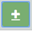

Scheduled Breaks - You can specify any number of times during the day when you want RSIGuard to remind you to take a break. Enter the time in the white box, and click the

button (or press Shift-Alt +) to add it to the list of times. If you hover the mouse over the time box, an X appears to allow you to delete the time.
Do Not Allow Breaks Between - Allows you to prevent breaks from occurring during a selected time range. This setting should only be used if you have a regular period during the day when it is undesirable for you to take a break. During this time, BreakTimer will not suggest breaks. Your break compliance score drops if a break is needed and this setting delays it.